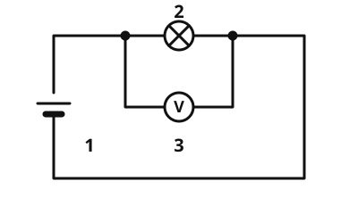

Voltage
Learn with an AI tutor
An AI tutor explains this page to you and helps you with the exercises. Choose your assistant:
Open with Claude Open with ChatGPT Open with Le Chat
You use your own account with the provider. The assistant is not offered by lernapps.net: lernapps only provides the content and the exercises. The choice holds for all pages, on this device only.
The idea
Why does current flow in a circuit at all? The battery drives it, like a pump drives water around a loop. How strongly it drives is told by the voltage. Without a drive nothing flows, even when the circuit is closed. As with the water picture: the picture explains, but it has limits.
What to remember
- Voltage
The voltage says how strongly the power source drives the current. Its symbol is and it is measured in volts (V).
- Voltmeter
A voltmeter measures the voltage. You connect it in parallel: with its two terminals at the two ends of the part you want to measure.
Typical voltages: - AA battery: 1.5 V - flat battery: 4.5 V - car battery: 12 V - socket: 230 V

The voltmeter is in parallel with the lamp: it measures the voltage across the lamp. Labels: 1 battery, 2 lamp, 3 voltmeter.
Source: https://github.com/lernapps/elektrizitaet. Licence: CC0-1.0.Even without current
There is voltage between the poles of a battery even when the circuit is open. But current only flows in a closed circuit.
Safety
Only experiment with batteries, never with the socket: 230 V can kill.
Example
Two AA batteries
A torch holds two AA batteries one behind the other. Each has 1.5 V, together they drive the current with 3 V. A voltmeter across both batteries shows 3 V.
Practice
Task no. 1
Task no. 1
The battery has 9 V. Connect the voltmeter so that it shows 6.75 V.
The four points: 1 before the first resistor (10 Ω), 2 between the resistors, 3 after the second (30 Ω), 4 in the bottom wire.
Solution
The voltmeter at point 2 and point 3, that is, in parallel with the second resistor (30 Ω): 9 V · 30 Ω : (10 + 30) Ω = 6.75 V.
Exercise
Solution
In parallel with the lamp, with both terminals at the ends of the lamp. right answer
Voltage exists between two points, here the two ends of the lamp.
In series with the lamp, in the middle of the wire.
That is not how a voltmeter is connected. That is how an ammeter is connected.
Only to one pole of the battery.
Voltage is always measured between two points. With only one terminal there is nothing to measure.
A voltmeter is in parallel with the part whose voltage you want to measure.
More on it:
Exercise
Solution
Right answer: The statement is true.
The voltage exists between the poles, even in an open circuit. Current only flows if the circuit is closed.
More on it:
Exercise
Solution
Right answer: AA battery – 1.5 V; Flat battery – 4.5 V; Car battery – 12 V; Socket – 230 V
An AA battery has 1.5 V, a flat battery 4.5 V, a car battery 12 V and the socket 230 V.
More on it: